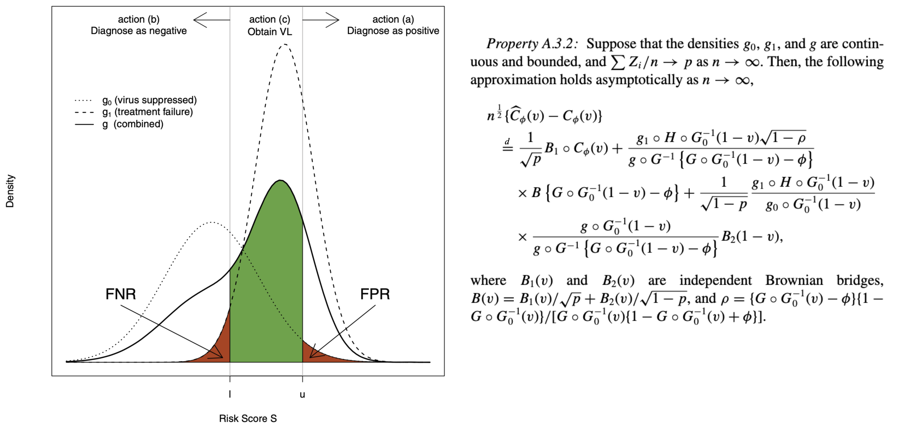
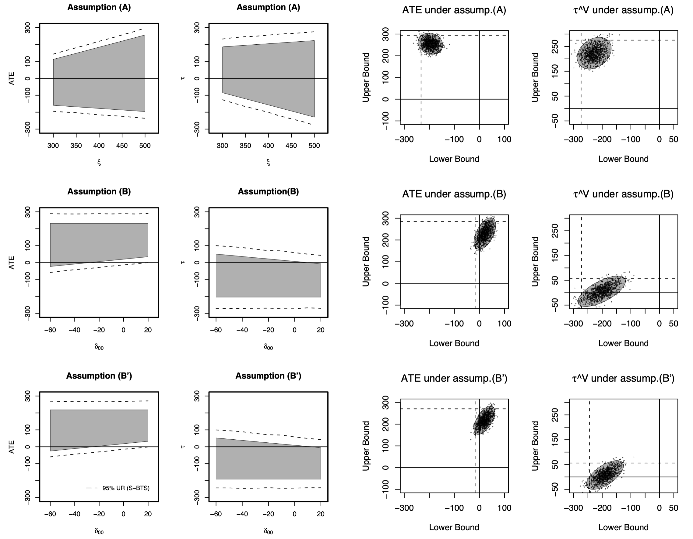

The World Health Organization (WHO) guidelines for monitoring the effectiveness of human immunodeficiency virus (HIV) treatment in resource-limited settings are mostly based on clinical and immunological markers (e.g., CD4 cell counts). Recent research indicates that the guidelines are inadequate and can result in high error rates. Viral load (VL) is considered the “gold standard,” yet its widespread use is limited by cost and infrastructure. In this article, we propose a diagnostic algorithm that uses information from routinely collected clinical and immunological markers to guide a selective use of VL testing for diagnosing HIV treatment failure, under the assumption that VL testing is available only at a certain portion of patient visits. Our algorithm identifies the patient subpopulation, such that the use of limited VL testing on them minimizes a predefined risk (e.g., misdiagnosis error rate). Diagnostic properties of our proposed algorithm are investigated and assessed by simulations.
Confounding is a major concern when using data from observational studies to infer the causal effect of a treatment. Instrumental variables, when available, have been used to construct bound estimates on population average treatment effects when outcomes are binary and unmeasured confounding exists. With continuous outcomes, meaningful bounds are more challenging to obtain because the domain of the outcome is unrestricted. We propose to unify the instrumental variable and inverse probability weighting methods, together with suitable assumptions in the context of an observational study, to construct meaningful bounds on causal treatment effects. The contextual assumptions are imposed in terms of the potential outcomes that are partially identified by data. The inverse probability weighting component incorporates a sensitivity parameter to encode the effect of unmeasured confounding. The instrumental variable and inverse probability weighting methods are unified using the principal stratification. By solving the resulting system of estimating equations, we are able to quantify both the causal treatment effect and the sensitivity parameter (i.e. the degree of the unmeasured confounding).
